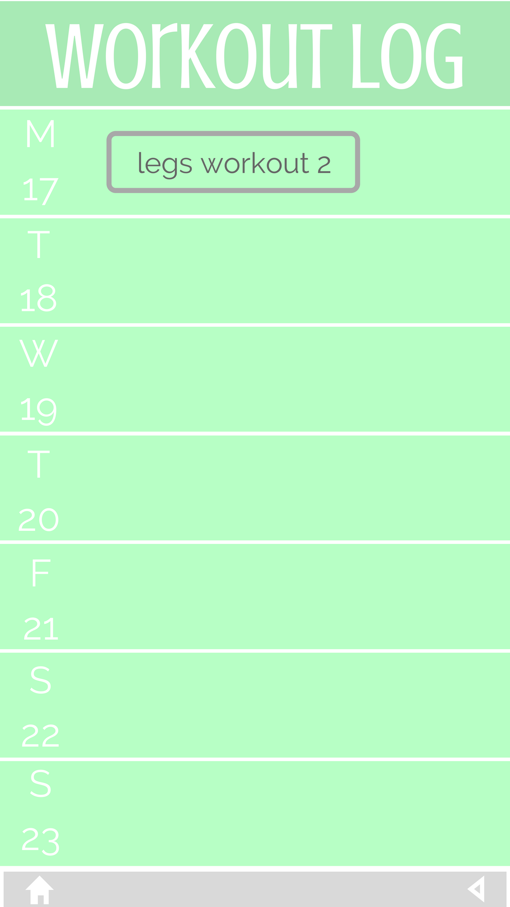
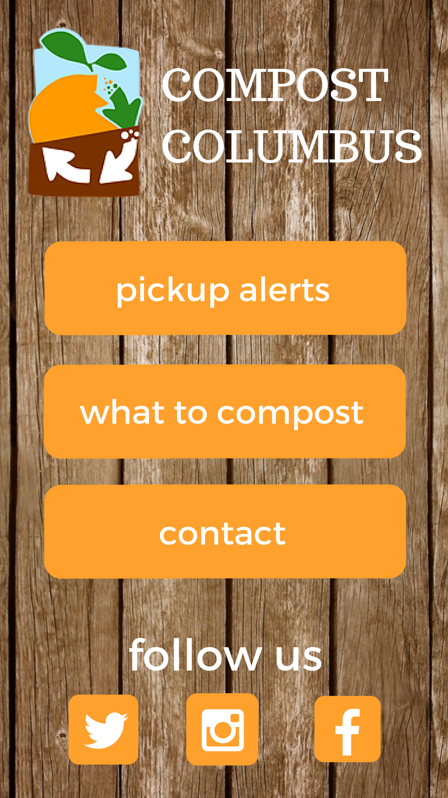

Inquisitive, persistent, and flexible former educator
looking to leverage a lifelong love of learning as a junior software developer
Technical Skills & Experiences
Tech Elevator
I am currently enrolled at Tech Elevator as a Java Development Boot Camp Student. During my 14 weeks in the boot camp, I am learning how to develop dynamic web based software systems using the Java language fundamentals, the principles of object-oriented programming, web application development, database programming, and development tools and techniquies. The program is demanding and fast-paced, and I love it. A few projects I have completed include vending machine software in Java using OOP and i/o, a registration page for national park campsites in Java and PostgreSQL using integration testing, and a web application for weather information at national parks using servlets and JSP, Spring MVC, HTML, and CSS. I also created integration tests using Selenium and Cucumber.
Technical Skills
Development tools and techniques
Agile, unit testing (JUnit), integration testing, TDD, unix command line navigation, Git, Eclipse, Selenium, Cucumber
Database Programming
JDBC, table design and creation, SQL queries and DML, PostgreSQL, E/R diagrams
Web Application Development
HTML, CSS, Javascript, jQuery, Servlets, JSP, Spring Web MVC, Tomcat
Personal Projects
Design for Workout Log Android App for tracking personal fitness
Design for Andriod App for local business Compost Columbus

Professional Experience
Math Teacher
Hamilton Township High School
Columbus, OH
I began working at HTHS in 2013 after finishing my Master of Education and student teaching. I made it my goal to ensure that my students were not only successful as mathematicians, but also as growing and changing people.
Teaching taught me so many things. It taught me that hard work is hard and that it's always worth it. It taught me how to ask for help. I was a successful teacher because I had coworkers who were willing to help me learn and grow. It taught me how to break big problems into small pieces. No one can swallow the quadratic formula or the Pythagorean Theorem all at once. It taught me how to explain. And explain differently. And explain differently from that. It taught me how to meet people where they are. What a journey!
Ultimately, I found that teaching didn't continute to challenge me in the ways that I had hoped it would. I love the journey of solving a tough problem, and I love the feeling of having accomplishing goals I worked hard for. I am looking to programming as a way to act on a lifelong desire to keep learning the hard stuff.

Education
Graduate School
I took the accelerated track and completed Ohio State's two-year Master of Education program in one year. During that year, I took education classes, taught Business Algebra to undergrads as a Graduate Teaching Assistant, and student taught high school math. Hands down the busiest year of my life! I graduated cum laude in June 2013, and although they say your first year of teaching can be utterly exhausting, it was nothing compared to my year of grad school!
Undergraduate
I studied mathematics at the Ohio State University after having transferred from Miami University halfway through my sophomore year. I was named to the Dean's List each quarter that I studied at Ohio State. I worked as an undergraduate teaching associate during my senior year and made lifelong friends in the TA office. In May 2012, I graduated cum laude with a Bachelor of Science (on a 90 degree day in a black robe in the Shoe, smiling and sweaty next to my best friends).
I have always been so thrilled to learn new things. One of my very favorite aspects of Ohio State was that I felt that I had the ability to study whatever I wanted, whatever I could imagine. I changed my major more than a few times (how can you not be tempted by a seemingly infinite number of ideas to study?!), but I always came back to math. I loved the logic and the challenge, and I found it to be absolutely beautiful. I am so enamored with coding, and I think it's because I find it to have the same qualities that kept me running back to math. Is life not one big game of finding new things to add to the list of things you love?
About Becca
Hello! My friends and family call me Becca. I am happiest when I am creating. I am here to grow, learn, and spend time with people I love. Click on the image below for a glimpse into what makes me me!